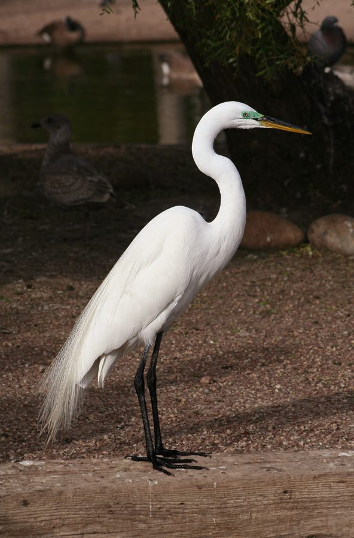

बड़ा बगुलाGreat Egret
Ardea alba · Ardeidae · BRD-0080

- Scientific nameवैज्ञानिक नाम
- Ardea alba Linnaeus, 1758
- Familyकुल
- Ardeidae
- Hindiहिंदी
- बड़ा बगुला / मल्लंग बगला
- Local namesस्थानीय नाम
- bada bagula, bara bagla, mallang bagla, safed bagula, bagla
- Status hereयहाँ की स्थिति
- native
- Movementआवागमन
- Resident, here all year
- IUCNIUCN
- LC
- Reviewसमीक्षा
- audited and independently read
When to look कब देखें
Present all year.साल भर मौजूद।
Uses and possibilities उपयोग और संभावनाएँ
Drawn from the documented uses in the profile below, where each is labelled traditional, current or a research lead. All uses →
Tell it apart from इनसे अलग पहचानें
बड़ा बगुला / Great Egret
Ardea alba Linnaeus, 1758 — Ardeidae
बड़ा बगुला — पूर्वी उत्तर प्रदेश की आर्द्रभूमियों में सबसे बड़ी सफेद चिड़िया, अक्सर तालाब और धान के खेत में एकाकी खड़ी पाई जाती है। इसकी लंबी गर्दन, पीली चोंच और काली टाँगें पानी में घात लगाने के शिकार के लिए आदर्श हैं। नीली पीठ (प्रजनन काल में) से सजी यह चिड़िया भारतीय आर्द्रभूमि संरक्षण का प्रतीक है।
Quick Identification त्वरित पहचान
| Feature | Description |
|---|---|
| Size | Large egret; 85–102 cm tall; pure white year-round |
| Plumage | Entirely white; no plume variation except breeding season |
| Breeding (May–Aug) | Develops loose plumes on back; base of bill turns greenish-yellow |
| Bill | Long, straight, yellow; black tip |
| Legs | Entirely black; held extended in flight |
| Neck | Very long and flexible, held in S-curve when at rest |
| Eyes | Yellow iris |
Field tip: A large, pure-white heron standing alone in water or at marsh edges — is a Great Egret. The length of the neck and bill, the black legs, and the yellow bill are diagnostic. Always stands still for long periods, unlike cattle egrets which are often in groups on cattle.
हिंदी — कैसे पहचानें:
बहुत बड़ी, पूरी तरह सफेद चिड़िया।
लंबी पीली चोंच और काली टाँगें।
अकेले या जोड़ी में तालाब के किनारे खड़ी।
घात लगाकर शिकार करती है।
Morphology आकारिकी
Biometrics:
| Measurement | Range |
|---|---|
| Total length | 850–1020 mm |
| Wing (flattened chord) | 410–475 mm |
| Tail | 200–250 mm |
| Bill | 105–130 mm |
| Tarsus | 100–140 mm |
| Weight | 700–1100 g |
Size: 85–102 cm tall; wingspan 130–150 cm. Weight 700–1200 g. Second-largest egret in the region after Purple Heron in breeding plumage.
Plumage: Pure white year-round. In breeding season (May–August), develops loose, elongated plumes on the back and breast that are raised during courtship displays. These plumes were once hunted for the millinery trade, causing population crashes.
Bill: Long, straight, yellow with a dark tip. Used for rapid underwater strikes.
Legs: Entirely black; held extended behind in flight (unlike herons which tuck).
Neck: Long, slim, held in characteristic S-curve at rest; straightens during flight.
Eyes: Yellow iris, forward-facing for binocular vision during hunting.
Breeding plumage: Develops greenish tinge at bill base; plumes extend from back down to tail coverts.
Sexes: Identical. Juveniles whiter, lack plumes.
Vocalisations. Three main call types:
- Alarm and flight call: A harsh, loud croak — fraank or kraak — given when disturbed, audible over a kilometre; frequency 0.5–2.0 kHz.
- Contact call at nest: Low, soft grunting and bill-snapping sounds during pair bonding and nest exchanges.
- Territorial call: Loud, rasping croaks from prominent perches, maintaining feeding territory boundaries.
हिंदी: तेज़, भारी क्रेक या गर्जन जैसी आवाज़। दूर तक सुनाई देती है। घोंसले पर नरम गुड़गुड़ाहट।
Ecological Role पारिस्थितिक भूमिका
Aquatic predator: Great Egrets are ambush hunters specializing in medium and larger fish:
- Medium fish (Channa, Heteropneustes, Mystus, Catla)
- Large tadpoles and adult frogs
- Freshwater crabs and large aquatic insects
- Small water snakes and lizards
Stalking technique: Walks slowly through shallow water or stands motionless for minutes before an explosive strike. Can cover great hunting ranges — up to 5 km daily from roosting sites.
Wetland health indicator: Great Egrets require abundant fish and indicate a healthy, productive aquatic ecosystem. Their presence signals adequate water depth, oxygen levels, and fish populations.
Colonial nester: Heronries with dozens of Great Egrets (and other herons, storks, ibises) are keystone structures for wetland ecosystem function — the birds' guano enriches the nutrient cycle.
Prey of: Fish eagles and snakes may take eggs and chicks at the nest.
हिंदी: बड़ी मछलियाँ, मेंढक, और केकड़े खाता है। अकेले शिकार करता है, घात लगाकर। तालाब का सबसे बड़ा शिकारी।
Life Cycle / Phenology जीवन चक्र
Resident: Present year-round in eastern UP; does not migrate.
Breeding: June–October (monsoon and post-monsoon). Colonial nester, sometimes mixed heronries with other species.
Nesting: Platform nest of sticks in tall trees near water. Trees: tamarind, peepal, banyan, neem. Nests are 10–20 m above ground, reused year after year.
Eggs: 3–5 pale blue-green eggs. Both parents incubate ~26 days.
Chicks: Altricial; fed by both parents. Fledge at ~6 weeks; independent at ~3 months.
Roosting: Communal roosts in tall trees near water bodies; can include hundreds of egrets and herons.
Moulting: Begins July, completes by December; gradual replacement of plumage.
हिंदी: पूरे साल रहता है। मानसून में प्रजनन करता है। बड़े पेड़ों पर घोंसले की बड़ी कॉलोनी बनाता है।
Prey भोजन
| Prey | Hindi | Capture Method |
|---|---|---|
| Medium and large fish | बड़ी मछलियाँ | Ambush strike |
| Adult frogs | मेंढक | Stalking; shallow water |
| Freshwater crabs | केकड़े | Shallow water picking |
| Large dragonfly nymphs | व्याधपतंग के बड़े बच्चे | Active diving search |
| Small water snakes | छोटे जल साँप | Ambush from water edge |
हिंदी: यह बड़ी मछलियों का शिकारी है। अकेले, धैर्य से घात लगाता है।
Conservation Status संरक्षण स्थिति
IUCN Status: Least Concern (LC)
Wildlife Protection Act, 1972: Listed under Schedule IV (Protected) of the Wildlife (Protection) Act, 1972, as amended in 2022. Killing or harming a Great Egret is illegal in India.
Threats: Drainage and destruction of wetlands; pesticide bioaccumulation through fish; disturbance at heronries; pollution of water bodies; entanglement in fishing nets.
Population history: Numbers crashed globally in the late 1800s due to hunting for plumes. Protected populations have recovered well since then.
हिंदी: यह पक्षी भारतीय कानून में संरक्षित है।
Agricultural / Human Relevance कृषि और मानव संबंध
Predation on farmed fish: Great Egrets feed on fish in farm ponds and rice paddies. In some commercial fisheries, they are seen as significant predators. However, they also control populations of predatory fish that damage juvenile farmed fish.
Beneficial ecosystem role: In traditional mixed-farm systems, the presence of egrets indicates a healthy pond ecosystem and stable fish populations. Some farmers protect heronries.
Neutral cultural status: Unlike the sacred Sarus Crane, the Great Egret has no particular cultural protection or persecution in rural eastern UP.
हिंदी: यह तालाब की मछलियाँ खा सकता है, लेकिन तालाब के स्वास्थ्य का संकेत भी है।
Expected Locally स्थानीय रूप से अपेक्षित
Not a field record. Written from published accounts for eastern Uttar Pradesh. No confirmed local sighting yet — if you have seen it, that is what the atlas needs.
अभी तक स्थानीय पुष्टि नहीं। यह विवरण प्रकाशित स्रोतों से है।
Common and widespread year-round across Basti district in all suitable wetlands — lakes, ponds, river margins, and flooded paddies. Solitary birds or pairs are regular at water bodies. Large heronries with dozens of Great Egrets and other herons are reported near major lakes and river systems, particularly during breeding season (June–October).
Distribution वितरण
Global range: Widespread across every continent except Antarctica. The most cosmopolitan of all egrets.
In India: Found throughout India in all freshwater and coastal wetlands, from sea level to 2,000 m elevation.
In Uttar Pradesh: Common resident throughout all districts, concentrated in the Gangetic plains and associated wetland systems.
In Basti district / eastern UP: Abundant year-round resident, particularly along the Ghaghra and Rapti river systems and major lakes.
Research Questions शोध प्रश्न
Anyone can investigate these | कोई भी इन प्रश्नों की जाँच कर सकता है
- How far do Great Egrets travel from heronries to feeding sites? / घोंसले से शिकार तक कितनी दूरी तय करते हैं? — Mark nest sites and track feeding locations.
- What is the prey size range and species composition? / कौन सी मछलियाँ पकड़ते हैं और कितने बड़े? — Observe feeding birds and estimate prey.
- How many nesting pairs are in your area? / आपके पास कितनी जोड़ियाँ घोंसले बनाती हैं? — Survey heronries in May–August.
- Do heronries persist year to year? / क्या घोंसले साल-दर-साल एक ही जगह बनते हैं? — Map nesting trees and revisit annually.
- What is the success rate of hunting strikes? / कितने बार शिकार पकड़ते हैं? — Watch a hunting egret for 30 minutes; count strikes and catches.
Similar Species मिलती-जुलती प्रजातियाँ
| Species | How to tell apart | हिंदी |
|---|---|---|
| Cattle Egret | Smaller (50–66 cm); buffier neck; usually in groups on cattle; yellow bill | छोटा, गायों के साथ |
| Little Egret | Smaller (55–65 cm); black bill with yellow lores; yellow feet; more active | छोटा, पीले पैर |
| Indian Pond Heron | Much smaller (40–46 cm); brown at rest; white wings in flight | छोटा, भूरा रंग |
Field rule: A large, pure-white heron standing alone in shallow water with a long yellow bill and black legs — is a Great Egret. The size and solitary hunting behaviour distinguish it from smaller egrets.
Taxonomy & Classification वर्गीकरण
Original description. Ardea alba was described by Carl Linnaeus in 1758 in the 10th edition of Systema Naturae (page 144) as Ardea alba. Type locality: Europe. This is the nomenclatural type for the genus Ardea.
Subspecies. Four subspecies are recognised, though boundaries are subtle:
| Subspecies | Authority | Range | Notes |
|---|---|---|---|
| A. a. alba | Linnaeus, 1758 | Europe, western Asia, North Africa | Eastern UP subspecies — nominate form; slightly larger |
| A. a. modesta | (Gray, 1831) | Eastern Asia (China, Korea, Japan) | Slightly smaller; smaller plumes |
| A. a. melanorhynchos | (Wagler, 1829) | Africa south of Sahara | Black bill tip |
| A. a. egretta | (Gmelin, 1789) | Americas | American subspecies; larger |
Family and order placement. Order Pelecaniformes, family Ardeidae (herons, egrets, bitterns), containing approximately 64 species. The genus Ardea contains large herons found across the Old World.
Phylogenetic notes. Ardea alba is sister to the Purple Heron complex (A. purpurea). Both are members of the monophyletic genus Ardea (Mayr, 2010).
IUCN status rationale. Assessed as Least Concern (LC). Extremely large and stable population across a huge range spanning continents. Local wetland losses are offset by adaptation to artificial wetlands, reservoirs, and ponds. The species has recovered from nineteenth-century plume-hunting persecution.
Photo Gallery फोटो गैलरी
फोटो निर्देश: तालाब और नहर के किनारे सुबह और शाम को आसानी से दिखते हैं। शिकार करते हुए फोटो लें। प्रजनन काल (मई-जुलाई) में पीठ पर लंबे पंख दिखते हैं।
Photos needed आवश्यक फोटो
- [ ] Standing at water's edge showing full height and posture (किनारे खड़ा)
- [ ] In flight showing black legs extended (उड़ान में)
- [ ] Breeding plumage with back plumes (प्रजनन रंग)
- [ ] Hunting strike or fish capture (शिकार करते हुए)
- [ ] Heronry with multiple birds nesting (घोंसलों की कॉलोनी)
No photos yet — add field photos to media/species/great_egret/ and run node scripts/sync_photos.js.
Atlas Connections संबंधित प्रजातियाँ
- Indian Pond Heron — fellow wetland predator; shares habitat and heronries
- Sarus Crane — shares wetland habitat; both indicators of healthy waterlands
- Indian Lotus — nesting and feeding habitat
References संदर्भ
- Linnaeus, C. (1758). Systema Naturae. 10th ed. Laurentii Salvii, Holmiae. [original description]
- Ali, S. & Ripley, S.D. (1987). Handbook of the Birds of India and Pakistan. Vol. 1. Oxford University Press, New Delhi.
- Grimmett, R., Inskipp, C. & Inskipp, T. (2011). Birds of the Indian Subcontinent. 2nd ed. Christopher Helm, London.
- Mayr, G. (2010). Phylogenetic affinities of early anseromorphs and charadriomorphs. Ibis, 152(2), 340–353.
- BirdLife International (2023). Ardea alba. IUCN Red List of Threatened Species.
- GBIF Occurrence Data — Ardea alba, India (2024).
- Rasmussen, P.C. & Anderton, J.C. (2005). Birds of South Asia: The Ripley Guide. Smithsonian Institution, Washington.
Source file: species/fauna/birds/great_egret.md